SS - ALL
SS - Z
SS - R
SS - T
45 - ALL

45 - Z
45 - R
45 - T
VA - ALL
VA - Z
VA - R
VA - T
The CUS velocity model is used which can be downloaded from http://www.eas.slu.edu/eqc/eqc_cps/TUTORIAL/MODELS/index.html. This model has some Q (note if the value is < 1 the value is actually q inverse).
Greens functions were computed for a source depth of 9 km in the model using a sample interval of 0.05 sec. The synthetics have a triangular source time function of width 0.20 sec, which was designed to have a spectral zero at the 10 Hz Byquist frequency. The corner frequency of the source pulse is about 6 hz.
The gsac mt command was used to read the Greens functions and to create a synthetic for a given combination of strike, sip, rake, azimuth and Mw.
Further the results were convolved with a triangular function with base width of 0.5 sec. The results are peak ground velocity in units of m/s for an Mw=3.
There is no attempt to model an earthquake, hence the apparent dichotomy between the Mw and the source pulse width. The purpose is to examine peak amplitude versus hypocentral distance.
For the interest ion quickly preparing this page, only the larges positive amplitude is plotted. I did not want to mess around with scripting and ABS into awk.
45 45 degree dip slip Strike=5 Dip=45 Rake=85 SS strike - slip Strike=5 Dip=80 Rake=5 VA Virginia Strike=28 Dip=50 Rake=113Simulations
For each component, I used Greens functions at precomputed epicentral distances to compute synthetics at azimuths of 10, 20, ..., 340 and 350 degrees.The peak velocity was then plotted as a function of epicentral distance. I did not focus on the S arrival. So perhaps the peak motion might be due to the P wave.
The following plots present four figures for each mechanism: ALL which is the poverlay of all components onto a single plot and may be useful to see which component dominates at a given distance, Z which is the vertical, R which is the radial and T which is the transverse.
9 km deep source
| 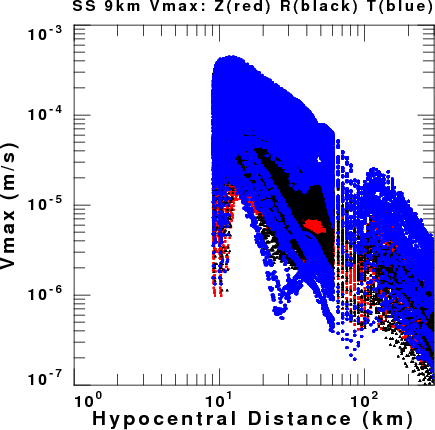 SS - ALL |
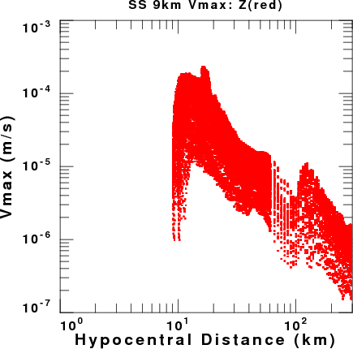 SS - Z |
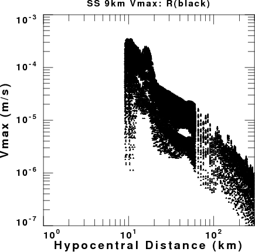 SS - R |
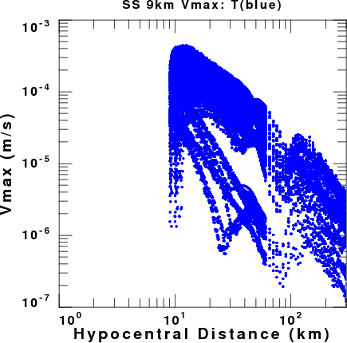 SS - T |
| 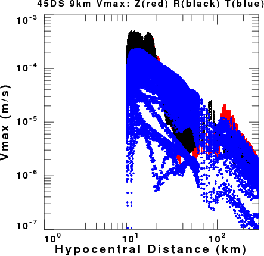 45 - ALL |
45 - Z |
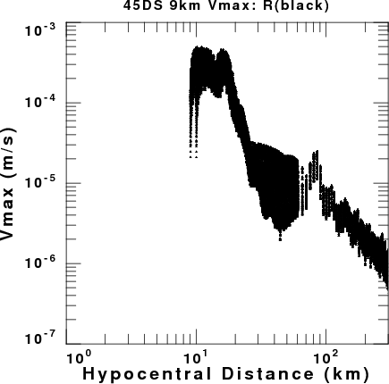 45 - R |
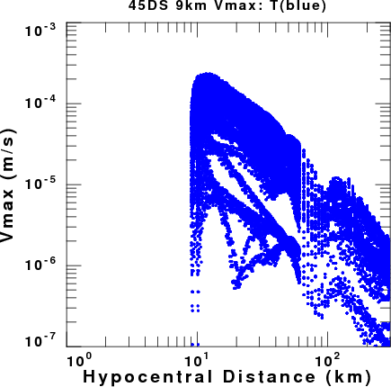 45 - T |
| 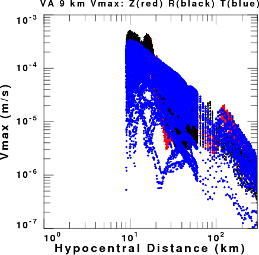 VA - ALL |
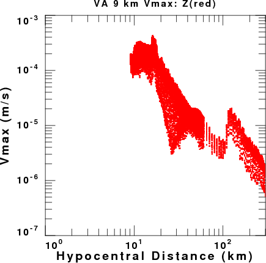 VA - Z |
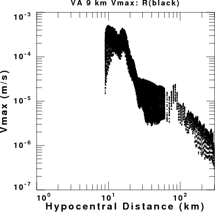 VA - R |
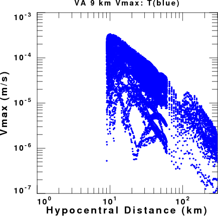 VA - T |
| 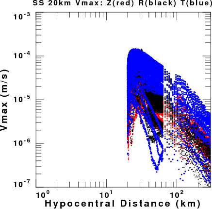 SS - ALL |
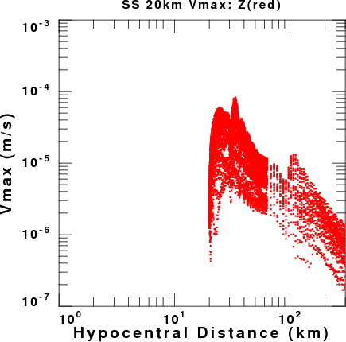 SS - Z |
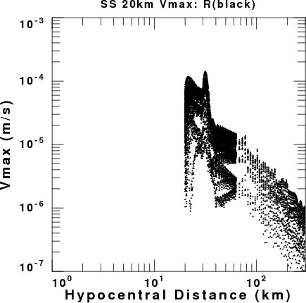 SS - R |
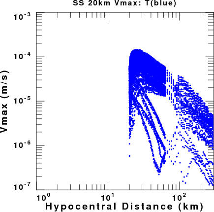 SS - T |
| 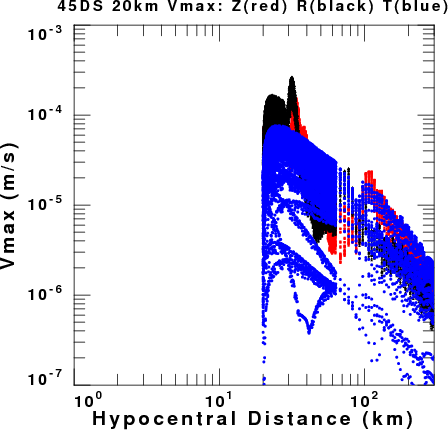 45 - ALL |
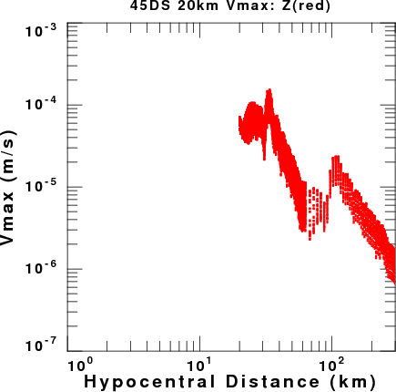 45 - Z |
 45 - R |
 45 - T |
| 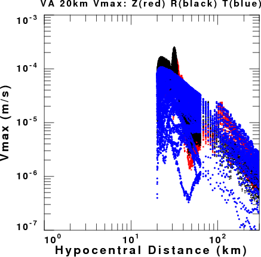 VA - ALL |
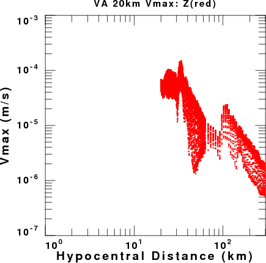 VA - Z |
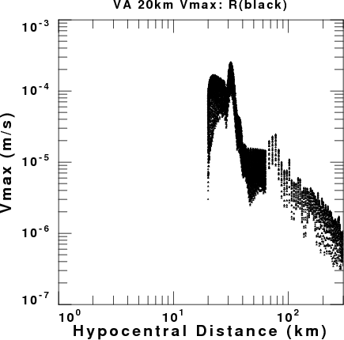 VA - R |
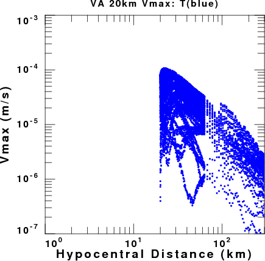 VA - T |